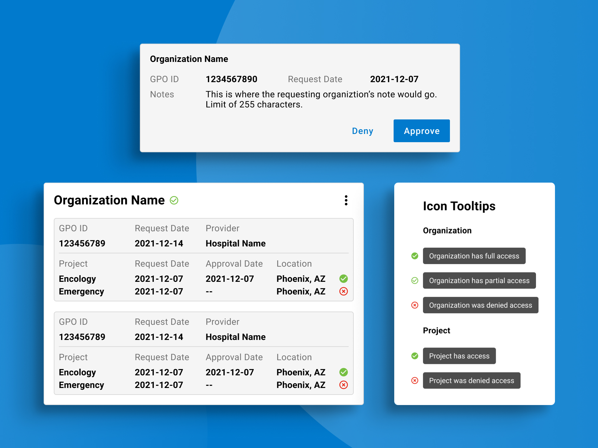
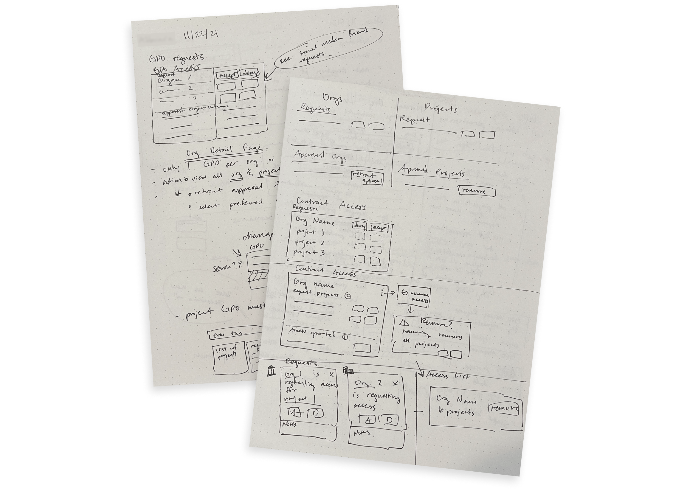
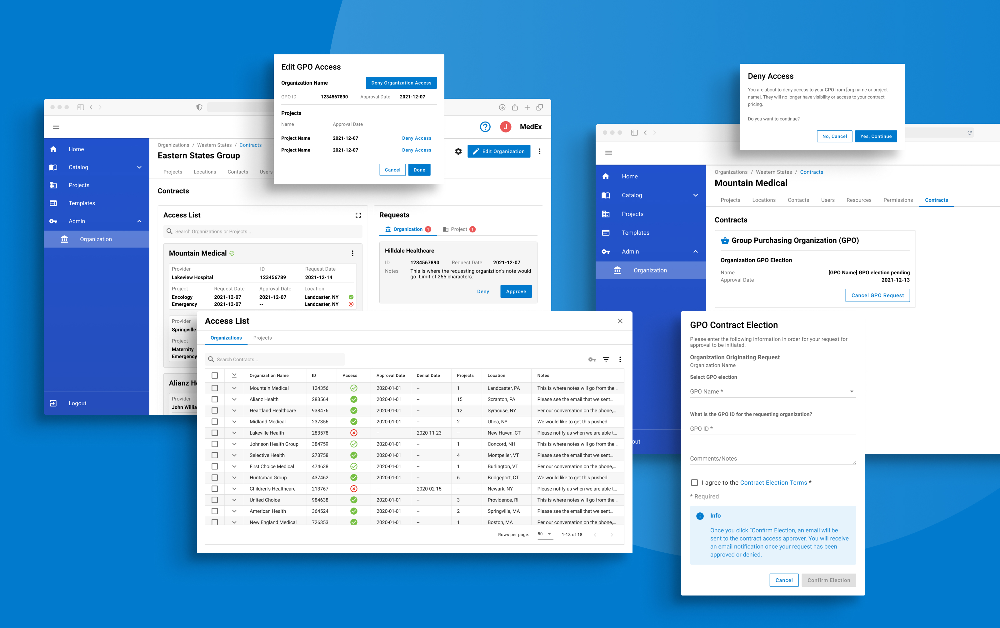

November 2021
Problem
Our clients asked our team to work on a new feature for their product that would allow organizations to grant and request access to group purchasing contracts. Access needed to managed at multiple levels within organizations.
My Role
Primary UX Designer
Process
Although this was a quick project in terms of time, we still followed an abreviated design process of research, ideating, and prototyping, before presenting our work to the client.
Research
While researching how requesting access was done in other software I was reminded of friend requests on social media platforms. This became the basic pattern that we used for requests.

Ideate
Because of the different levels at which contracts could be granted or denied access, it was particularly challenging to find a way to represent that information visually. I was able to come up with two options: a nested table or a custom card design.
For further clarification I decided to include check mark and “x” icons with tooltips on hover as a visual representation of the access granted at diferent levels.

Prototyping
After narrowing down the design through wireframing, I created a click-through prototype in Figma with all the relevant frames.

Presentation and Outcome
When the prototype was ready, I presented it to the product manager with whom I had been in regular meetings with to make sure we were on the right track. With her go ahead we then presented the prototype to other stakeholders within the company for their sign-off.
We were able get buy in from the stakeholders and the design was handed off for development.